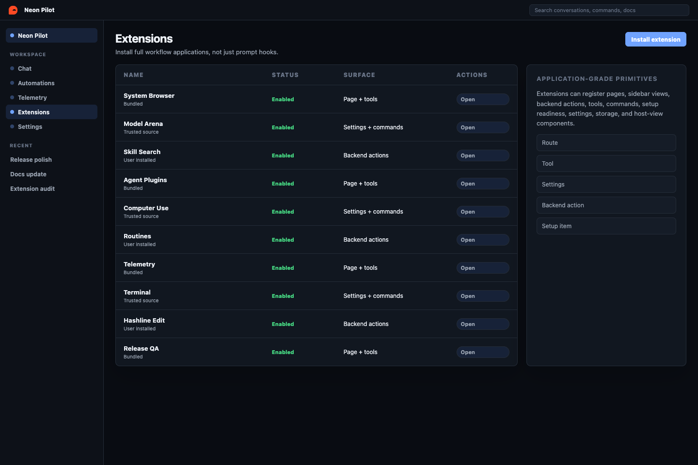
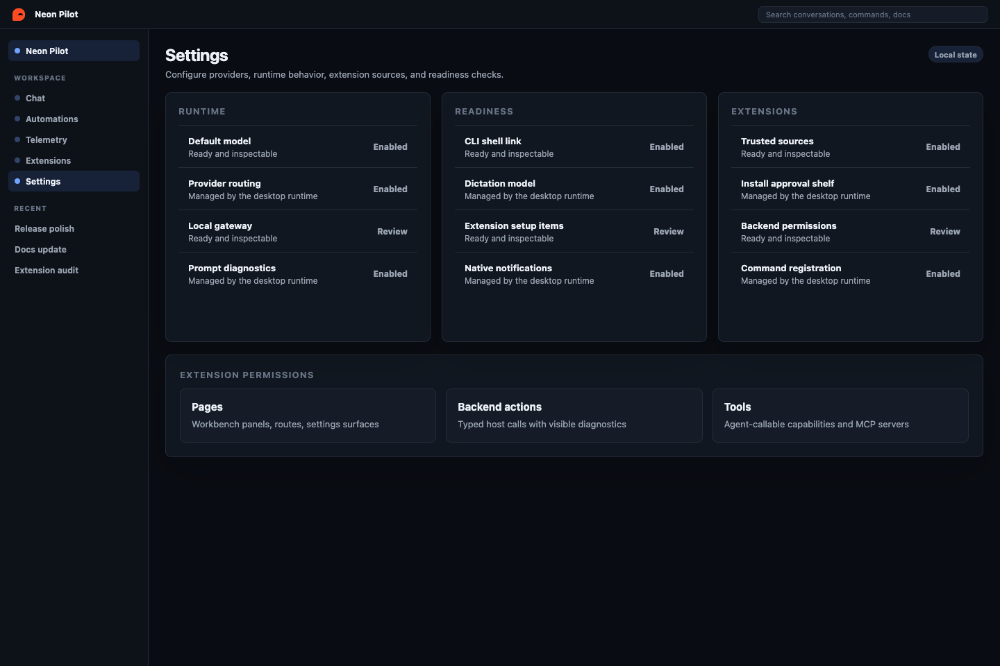
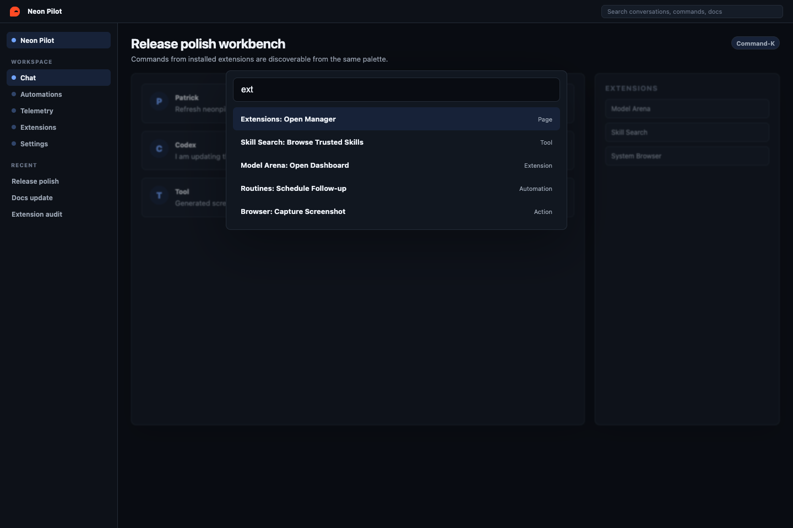

Your agent workspace runs from a macOS desktop app with local state, config, and files.
Local macOS runtime
The local AI agent runtime and workbench.
Neon Pilot gives coding agents a durable desktop home: conversations, background work, tools, extensions, screenshots, local knowledge, checkpoints, and inspectable runtime state in one app.
Local by default
Conversations, data, and runtime state stay on your machine.
Long-running work
Follow-ups, schedules, routines, model duels, and daemon-backed jobs keep moving after one reply ends.
Application-grade extensions
Add pages, panels, tools, settings, commands, skills, plugins, setup flows, and MCP servers as first-class
capabilities.
Install and bootstrap
Latest release
curl -fsSL https://raw.githubusercontent.com/patleeman/neon-pilot/master/install.sh | bash -s -- --install-cli --bootstrap
Requires macOS. Fully open source under MIT.

Let tasks continue as daemon-backed work, scheduled automations, follow-ups, routines, or deferred resumes.
Install or build native capabilities with commands, tools, pages, settings, skills, plugins, and docs.
Attach files, projects, instruction layers, generated context, and git-backed knowledge.
What it is
A desktop shell for agent work that should survive the chat turn.
Neon Pilot is not another hosted chat surface. It is a local runtime around the agent: transcript storage, workspace context, background execution, extension hosting, model/provider settings, browser control, MCP tools, terminal access, telemetry, and reusable workflow surfaces.
Use it when a task needs files, tools, follow-through, and durable state instead of a single disposable answer.
Feature set
The pieces agents need when work gets real.
Neon Pilot is built around the full loop: gather context, run tools, inspect output, continue in the background, and turn useful patterns into reusable capabilities.
Workbench conversations
Durable transcripts, file attachments, screenshots, drawings, model controls, todos, diffs, artifacts, and branch-aware status.
Background execution
Daemon-backed runs, scheduled automations, routines, goal mode, subagents, native alerts, and visible run state.
Local toolbelt
Terminal, browser, computer-use, ast-grep, hashline editing, web fetch, video and image probes, and MCP server calls.
Model operations
Provider setup, model picker controls, local gateway, prompt assembly diagnostics, context usage, and blind Model Arena duels.
Extension platform
Native extensions go beyond skills and hooks with routes, backend actions, tools, settings, setup readiness, commands, and host-view components.
Agent plugins and skills
Import Codex and Claude plugin packages, search trusted skill sources, preview and vet skills, then install them into the runtime.
Beyond skills and hooks
Extensions are a full application platform for agent workflows.
Claude Code and Codex-style harnesses give agents useful skills, hooks, and command surfaces. Neon Pilot extensions go further: they can own pages, sidebars, workbench panels, settings, backend actions, setup readiness items, tools, commands, storage, and host-view components.
The architecture is inspired by Pi's extension model, then pushed into a full desktop client so a workflow can become a real local application instead of another prompt layer.
Ask
Start with a conversation
Attach files or folders, choose a model, and ask the agent to inspect, write, debug, plan, or automate.
Run
Let work continue
Promote longer tasks into background runs, follow-ups, scheduled automations, and checkpointed changes.
Keep
Turn patterns into tools
When a workflow repeats, make it an extension with commands, UI, backend actions, docs, and tests.


Extension-first
Keep core small. Add workflows as extensions.
Neon Pilot's product surface is built around bundled, optional, and user extensions. Inspired by Pi's extension architecture, a capability can contribute pages, sidebar views, settings, commands, agent tools, skills, setup readiness items, and backend actions without bloating the runtime core.
Read extension docsDurable work
Give agents somewhere to continue.
Conversations, branches, artifacts, checkpoints, automations, routines, model duels, and daemon-backed runs persist across app restarts, so useful work can keep moving outside one synchronous response.
Read conversation docsContext
Bring the right workspace into the turn.
Files, folders, projects, instruction layers, skills, generated context, screenshots, and knowledge sync give agents practical operating context without rebuilding it from scratch each time.
Read context docsInspection
See what the runtime is doing.
Telemetry, prompt assembly diagnostics, context usage, background work, setup readiness, and extension diagnostics make agent behavior inspectable instead of mysterious.
Read telemetry docsmacOS today
Install the local workbench and make it your own.
Download the app, bootstrap the CLI, then add the workflows and extensions your workspace needs.